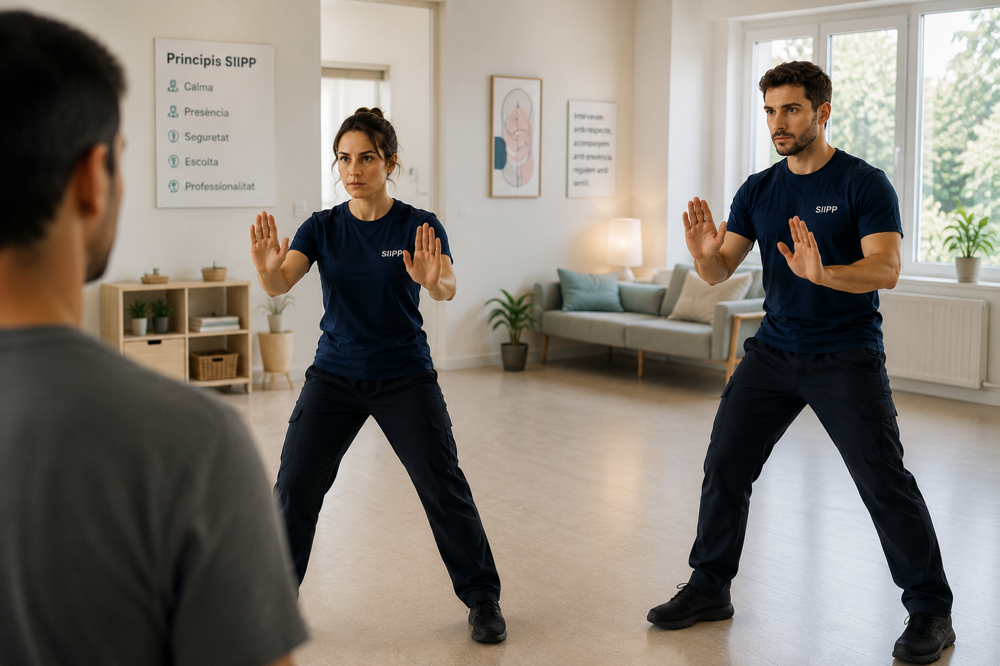

La regulació del professional determina la qualitat de la intervenció.
El SIIPP forma els vostres equips per conservar capacitat de decisió, percepció i seguretat quan la pressió augmenta. Formació bonificable per FUNDAE, ja aplicada en 3 entitats del tercer sector català.


La qualitat assistencial emergeix de la regulació dels professionals que intervenen.
El SIIPP situa la regulació psicofísica del professional en el centre de la intervenció. Quan el professional preserva la seva capacitat de percebre, decidir i actuar sota pressió, augmenta la qualitat de la intervenció i es facilita la corregulació amb la persona atesa.
Professionals més disponibles.
La regulació amplia la disponibilitat corporal i cognitiva per mantenir qualitat de lectura i capacitat de resposta durant tota la intervenció.
Equips més coherents.
Compartir un mateix marc d'intervenció facilita la coordinació, reforça la confiança entre professionals i incrementa la consistència de les decisions.
Intervencions de qualitat.
La regulació del professional preserva la qualitat de la intervenció fins i tot en les situacions de màxima exigència.
La regulació del professional transforma el funcionament de l'organització.
Quan els professionals preserven la seva capacitat de decisió, augmenta la qualitat assistencial, millora la coordinació dels equips i es reforça la seguretat de la intervenció.
Qualitat assistencial
Intervencions més consistents i ajustades a cada situació.
Coordinació
Equips que comparteixen criteris i actuen amb més coherència.
Seguretat
Professionals amb més capacitat per sostenir la intervenció sota pressió.
Sostenibilitat
Menys càrrega residual per als equips després de situacions intenses.
Cada intervenció comença en l'estat del professional.
Cada organització té una realitat pròpia. El SIIPP s'adapta al context, acompanya els equips i facilita la integració dels aprenentatges en la pràctica quotidiana.
La qualitat d'una intervenció física comença abans del contacte.
El Mètode de Contenció Respectuosa integra la intervenció física dins del Sistema Integral d'Intervenció Psicofísica. La qualitat tècnica s'acompanya d'una qualitat de decisió que preserva la coherència assistencial durant tot el procés.
Necessitat
Cada intervenció respon a una lectura continuada de la situació i a una necessitat assistencial identificada pel professional.
Proporcionalitat
La intervenció evoluciona amb la situació. Intensitat, durada i recursos s'ajusten contínuament per preservar la qualitat assistencial.
Últim recurs
La intervenció física forma part del sistema quan constitueix la resposta que millor preserva la seguretat i la qualitat de la intervenció.
Restauració
La intervenció conclou amb la recuperació progressiva de l'organització del professional, de l'usuari i de l'entorn, afavorint la continuïtat assistencial.
La contenció física forma part de la intervenció. La qualitat de la decisió determina la qualitat amb què aquesta intervenció es desenvolupa.
Un sistema desenvolupat i validat en contextos reals d'intervenció.
Més de 500 professionals de serveis del tercer sector català han format part de formacions SIIPP.
Tot el sistema, en un document.
Deixeu-nos les vostres dades i us enviem el dossier del SIIPP a l'instant: enfocament, continguts de formació, aportacions per a l'equip i bonificació FUNDAE. Rebreu també un correu nostre per concretar els següents passos.